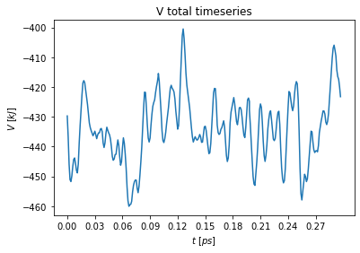

SD Simulations with Submission System¶
Imports¶
[1]:
import os
#for analysis
import numpy as np
from matplotlib import pyplot as plt
%matplotlib inline
import pygromos
from pygromos.files.gromos_system import Gromos_System
from pygromos.files.blocks import imd_blocks
from pygromos.data.simulation_parameters_templates import template_emin
/home/bschroed/Documents/code/pygromos/pygromos/files/topology/top.py:18: UserWarning: Module topo-files is under Development and not entirely implemented!
warnings.warn("Module topo-files is under Development and not entirely implemented!")
Input files¶
[2]:
root_dir = project_dir = os.path.abspath(os.path.dirname(pygromos.__file__)+"/../examples/example_files/SD_Simulation")
root_in_dir = root_dir+"/SD_input"
cnf_path = root_in_dir+"/6J29_unitedatom_optimised_geometry.cnf"
top_path = root_in_dir + "/6J29.top"
sys_name = "6J29"
#External imd_changes:
grom_system = Gromos_System(in_cnf_path=cnf_path, in_top_path=top_path, in_imd_path=template_emin,
system_name=sys_name, work_folder=root_in_dir)
RUN Emin¶
[3]:
from pygromos.hpc_queuing.submission_systems.Submission_Systems import LOCAL as subSystem
from pygromos.simulation_runner.simulation_building_blocks import emin
step_name = "a_vacuum_emin"
#Some special adaptation
grom_system.imd.BOUNDCOND.NTB =0
grom_system.imd.BOUNDCOND.NDFMIN = 0
grom_system.imd.WRITETRAJ = imd_blocks.WRITETRAJ()
grom_system.imd.WRITETRAJ.NTWX = 100
grom_system.imd.WRITETRAJ.NTWE = 100
del grom_system.imd.POSITIONRES
grom_system.adapt_imd()
[4]:
grom_system.save("test.obj", safe=False)
---------------------------------------------------------------------------
PicklingError Traceback (most recent call last)
<ipython-input-4-cc5ebc6e945a> in <module>
----> 1 grom_system.save("test.obj", safe=False)
2
~/Documents/code/pygromos/pygromos/files/gromos_system/gromos_system.py in save(self, path, safe)
765
766 if(not safe_skip):
--> 767 pickle.dump(obj=self, file=bufferdWriter)
768 bufferdWriter.close()
769 self.checkpoint_path = path
PicklingError: Can't pickle <class '__main__.ligands_info'>: it's not the same object as __main__.ligands_info
[5]:
grom_system = Gromos_System.load("test.obj")
---------------------------------------------------------------------------
EOFError Traceback (most recent call last)
<ipython-input-5-0810bc48c5bc> in <module>
----> 1 grom_system = Gromos_System.load("test.obj")
2
~/Documents/code/pygromos/pygromos/files/gromos_system/gromos_system.py in load(cls, path)
772 raise IOError("Please give as parameter a path:str or a File Buffer.")
773
--> 774 obj = pickle.load(file=bufferedReader)
775
776 bufferedReader.close()
EOFError: Ran out of input
[10]:
grom_system.ligand_info._asdict()
[10]:
OrderedDict([('names', ['6J29']),
('number', 1),
('positions', [1]),
('number_of_atoms', 27)])
[8]:
emin_gromos_system, jobID = emin(in_gromos_system=grom_system, project_dir=project_dir,
step_name=step_name, submission_system=subSystem, in_imd_path=None)
emin_gromos_system
################################################################################
a_vacuum_emin
################################################################################
Script: /home/bschroed/Documents/code/pygromos/pygromos/hpc_queuing/job_scheduling/schedulers/simulation_scheduler.py
################################################################################
Simulation PREPERATION
################################################################################
################################################################################
Simulation Setup:
################################################################################
steps_per_run: 3000
equis: 0
simulation runs: 1
ChainSubmission - a_vacuum_emin
==============================
submit a_vacuum_emin_1
________________________________________
PREVIOUS ID: None
#####################################################################################
ERROR in Submission
#####################################################################################
/home/bschroed/Documents/code/pygromos/pygromos/hpc_queuing/submission_systems/Submission_Systems.py:632: UserWarning: Queue search was called, but no queue present!
warnings.warn("Queue search was called, but no queue present!")
Traceback (most recent call last):
File "/home/bschroed/Documents/code/pygromos/pygromos/hpc_queuing/submission_systems/Submission_Systems.py", line 538, in submit_to_queue
process = bash.execute(command=command, catch_STD=True)
File "/home/bschroed/Documents/code/pygromos/pygromos/utils/bash.py", line 805, in execute
return execute_subprocess(command=command, verbose=verbose, catch_STD=catch_STD)
File "/home/bschroed/Documents/code/pygromos/pygromos/utils/bash.py", line 719, in execute_subprocess
p.wait() # Wait for process to finish
File "/home/bschroed/anaconda3/envs/pygromos/lib/python3.7/subprocess.py", line 1019, in wait
return self._wait(timeout=timeout)
File "/home/bschroed/anaconda3/envs/pygromos/lib/python3.7/subprocess.py", line 1653, in _wait
(pid, sts) = self._try_wait(0)
File "/home/bschroed/anaconda3/envs/pygromos/lib/python3.7/subprocess.py", line 1611, in _try_wait
(pid, sts) = os.waitpid(self.pid, wait_flags)
KeyboardInterrupt
During handling of the above exception, another exception occurred:
Traceback (most recent call last):
File "/home/bschroed/Documents/code/pygromos/pygromos/hpc_queuing/job_scheduling/schedulers/simulation_scheduler.py", line 152, in do
verbose = job_verb)
File "/home/bschroed/Documents/code/pygromos/pygromos/hpc_queuing/job_scheduling/schedulers/scheduler_functions.py", line 186, in chain_submission
nmpi=nmpi, end_mail=True, verbose=verbose)
File "/home/bschroed/Documents/code/pygromos/pygromos/hpc_queuing/submission_systems/Submission_Systems.py", line 553, in submit_to_queue
str(command))
ChildProcessError: command failed:
/home/bschroed/Documents/code/pygromos/examples/example_files/SD_Simulation/a_vacuum_emin/simulation/a_vacuum_emin_1/job_a_vacuum_emin_1.sh
[8]:
GROMOS SYSTEM: a_vacuum_emin
################################################################################
WORKDIR: /home/bschroed/Documents/code/pygromos/examples/example_files/SD_Simulation/a_vacuum_emin/input
LAST CHECKPOINT: None
FILES:
imd: /home/bschroed/Documents/code/pygromos/examples/example_files/SD_Simulation/a_vacuum_emin/input/a_vacuum_emin.imd
top: /home/bschroed/Documents/code/pygromos/examples/example_files/SD_Simulation/a_vacuum_emin/input/a_vacuum_emin.top
cnf: /home/bschroed/Documents/code/pygromos/examples/example_files/SD_Simulation/a_vacuum_emin/analysis/data/a_vacuum_emin.cnf
FUTURE PROMISE: True
SYSTEM:
LIGANDS: ['6J29'] resID: [1] natoms: 27
PROTEIN: nresidues: 0 natoms: 0
Non-LIGANDS: [] nmolecules: 0 natoms: 0
SOLVENT: [] nmolecules: 0 natoms: 0
[5]:
t = emin_gromos_system.ligand_info
print(t)
ligands_info(names=['6J29'], number=1, positions=[1], number_of_atoms=27)
[6]:
emin_gromos_system
[6]:
GROMOS SYSTEM: a_vacuum_emin
################################################################################
workDir: /home/bschroed/Documents/code/pygromos/examples/example_files/SD_Simulation/a_vacuum_emin/input
Files:
imd: /home/bschroed/Documents/code/pygromos/examples/example_files/SD_Simulation/a_vacuum_emin/input/a_vacuum_emin.imd
top: /home/bschroed/Documents/code/pygromos/examples/example_files/SD_Simulation/a_vacuum_emin/input/a_vacuum_emin.top
cnf: /home/bschroed/Documents/code/pygromos/examples/example_files/SD_Simulation/a_vacuum_emin/analysis/data/a_vacuum_emin.cnf
Future promise: True
RUN SD Simulation¶
[7]:
from pygromos.simulation_runner.simulation_building_blocks import sd
step_name = "b_vacuum_sd"
sd_gromos_system, jobID = sd(in_gromos_system=grom_system, project_dir=project_dir,
step_name=step_name, submission_system=subSystem,
equilibration_runs=1, simulation_runs=3)
sd_gromos_system
b_vacuum_sd
{'imd': '/home/bschroed/Documents/code/pygromos/pygromos/data/imd_templates/vacuum_sd.imd', 'top': '/home/bschroed/Documents/code/pygromos/examples/example_files/SD_Simulation/b_vacuum_sd/input/a_vacuum_emin.top', 'cnf': '/home/bschroed/Documents/code/pygromos/examples/example_files/SD_Simulation/b_vacuum_sd/input/a_vacuum_emin.cnf'}
{'imd': '/home/bschroed/Documents/code/pygromos/examples/example_files/SD_Simulation/b_vacuum_sd/input/b_vacuum_sd.imd', 'top': '/home/bschroed/Documents/code/pygromos/examples/example_files/SD_Simulation/b_vacuum_sd/input/b_vacuum_sd.top', 'cnf': '/home/bschroed/Documents/code/pygromos/examples/example_files/SD_Simulation/b_vacuum_sd/input/b_vacuum_sd.cnf'}
Script: /home/bschroed/Documents/code/pygromos/pygromos/hpc_queuing/job_scheduling/schedulers/MD_simulation_scheduler.py
################################################################################
Simulation PREPERATION
################################################################################
################################################################################
Simulation Setup:
################################################################################
steps_per_run: 100
equis: 1
simulation runs: 3
ChainSubmission - eq_b_vacuum_sd
==============================
submit b_vacuum_sd_eq_1
________________________________________
/home/bschroed/Documents/code/pygromos/examples/example_files/SD_Simulation/b_vacuum_sd/simulation/eq_b_vacuum_sd_1/eq_b_vacuum_sd_1.cnf
/home/bschroed/Documents/code/pygromos/examples/example_files/SD_Simulation/b_vacuum_sd/simulation/eq_b_vacuum_sd_1/eq_b_vacuum_sd_1.cnf
ChainSubmission - b_vacuum_sd
==============================
submit b_vacuum_sd_2
________________________________________
/home/bschroed/Documents/code/pygromos/examples/example_files/SD_Simulation/b_vacuum_sd/simulation/b_vacuum_sd_2/b_vacuum_sd_2.cnf
/home/bschroed/Documents/code/pygromos/examples/example_files/SD_Simulation/b_vacuum_sd/simulation/b_vacuum_sd_2/b_vacuum_sd_2.cnf
submit b_vacuum_sd_3
________________________________________
/home/bschroed/Documents/code/pygromos/examples/example_files/SD_Simulation/b_vacuum_sd/simulation/b_vacuum_sd_3/b_vacuum_sd_3.cnf
/home/bschroed/Documents/code/pygromos/examples/example_files/SD_Simulation/b_vacuum_sd/simulation/b_vacuum_sd_3/b_vacuum_sd_3.cnf
submit b_vacuum_sd_4
________________________________________
/home/bschroed/Documents/code/pygromos/examples/example_files/SD_Simulation/b_vacuum_sd/simulation/b_vacuum_sd_4/b_vacuum_sd_4.cnf
/home/bschroed/Documents/code/pygromos/examples/example_files/SD_Simulation/b_vacuum_sd/simulation/b_vacuum_sd_4/b_vacuum_sd_4.cnf
################################################################################
submit Final AnaLysis part
/home/bschroed/Documents/code/pygromos/examples/example_files/SD_Simulation/b_vacuum_sd/ana_out.log
/home/bschroed/Documents/code/pygromos/examples/example_files/SD_Simulation/b_vacuum_sd/job_analysis.py
ANA jobID: 0
[7]:
GROMOS SYSTEM: b_vacuum_sd
################################################################################
workDir: /home/bschroed/Documents/code/pygromos/examples/example_files/SD_Simulation/b_vacuum_sd/input
Files:
imd: /home/bschroed/Documents/code/pygromos/examples/example_files/SD_Simulation/b_vacuum_sd/input/b_vacuum_sd.imd
top: /home/bschroed/Documents/code/pygromos/examples/example_files/SD_Simulation/b_vacuum_sd/input/b_vacuum_sd.top
cnf: /home/bschroed/Documents/code/pygromos/examples/example_files/SD_Simulation/b_vacuum_sd/analysis/data/b_vacuum_sd.cnf
Future promise: True
Further Analysis:¶
Transform the trc into a pdb traj to check it out with pymol :!)
[8]:
#final analysis dir:
from pygromos.utils import bash
out_ana = project_dir+"/c_ana"
if(not os.path.exists(out_ana)):
bash.make_folder(out_ana)
[9]:
from pygromos.files.trajectory.trc import Trc
in_path=project_dir+"/b_vacuum_sd/analysis/data/b_vacuum_sd.trc.h5"
trc = Trc(input_value=in_path)
trc.write_pdb(out_ana+"/sd_traj.pdb", cnf_file=cnf_path)#grom_system.cnf.path)
trc
[9]:
Trajectory:
Read from hdf save
Contains only database
Type:
Trc
Frames: 300 Columns: 29
[10]:
from pygromos.files.trajectory.tre import Tre
in_path=project_dir+"/b_vacuum_sd/analysis/data/b_vacuum_sd.tre.h5"
tre = Tre(input_value=in_path)
tre
[10]:
Trajectory:
Read from hdf save
Contains only database
Type:
Tre
Frames: 300 Columns: 16
[12]:
#Plot Potential Energies
V_tot = np.array(list(map(lambda x: x[2], tre.database.totals)))
step = len(tre.database.TIMESTEP_time)//10
plt.plot(tre.database.TIMESTEP_time, V_tot)
plt.xticks(np.round(list(tre.database.TIMESTEP_time[::step]),2))
plt.xlabel("$t~[ps]$")
plt.ylabel("$V~[kJ]$")
plt.title("V total timeseries")
plt.savefig(out_ana+"/potential_energy_timeseries.png")

[8]: